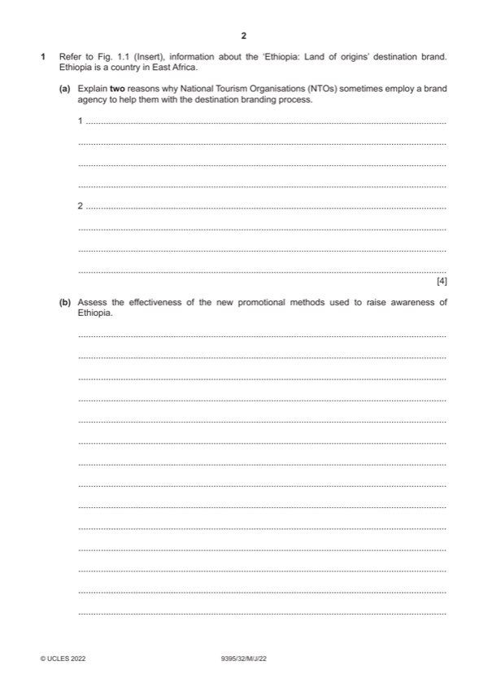

Question 1

Original paper page 2
Part 1(a) — solution
- NTOs may lack expertise (1) outsourcing may allow them to employ
- Competitive advantage (1) to ensure high quality branding communications
- Coherent brand communication/promotional strategy (1) NTOs must steer
- Ensures they reach the target audience (1) Brand agencies will help
- Brand agencies have a network of contacts/connections (1) which makes
Mark points
- NTOs may lack expertise (1) outsourcing may allow them to employ
- Competitive advantage (1) to ensure high quality branding communications
- Coherent brand communication/promotional strategy (1) NTOs must steer
- Ensures they reach the target audience (1) Brand agencies will help
- Brand agencies have a network of contacts/connections (1) which makes
Part 1(b) — solution
Assess the effectiveness of the new promotional methods used to 9
raise awareness of Ethiopia.
Candidates are expected to be familiar with the marketing mix and how
each element might be reviewed under the branding process. They should
be able to combine their theoretical knowledge of this concept with
information from Fig.1.1, to present an applied response specific to the
context of Ethiopia.
Indicative content:
Coordinated approach to marketing communications
Wide range of promotional techniques employed
New national tourism website created – global access
Interactive materials – videos, showcasing
Image library – stock photos for sharing by stakeholders
Multi-lingual brochures – used for marketing in a variety of contexts
New tourism routes and maps – raise awareness of specific attractions-
targeted marketing
Trade fairs – sharing information with industry partners
Other relevant information should also be credited.
Mark according to the levels of response criteria below.
Level 3 (7–9 marks) Candidates provide an assessment of promotional
techniques and their likely effectiveness in raising awareness of Ethiopia.
There is sound and frequent evidence of thorough, detailed and accurate
knowledge and understanding of concepts and principles, using appropriate
terminology as well as specific reference to Ethiopia.
Level 2 (4–6 marks) Candidates provide an explanation of promotional
techniques and their likely effectiveness in raising awareness of Ethiopia.
Candidates will show an understanding of the question and include
identification and explanation of one, two or more promotional techniques.
The answer is relevant and shows reasonable knowledge and
understanding of specific marketing concepts and principles, with some use
of appropriate terminology and some reference to Ethiopia.
Level 1 (1–3 marks) Candidates identify/describe up to three promotional
techniques but may not refer to Ethiopia. The answer shows limited
knowledge and understanding of specific marketing concepts and principles
with limited use of appropriate terminology.
Level 0 (0 marks) No content worthy of credit.
2022 Page 6 of 10
9395/32 Cambridge International AS & A Level – Mark Scheme May/June 2022
Mark points
- Include the ideas shown in the solution above.
Part 1(c) — solution
Evaluate how socio-economic factors might affect Ethiopia’s image as 12
a destination.
Candidates should use their knowledge and understanding of the
challenges faced in branding destinations and especially the socio-
economic factors which impact, together with information from Fig 1.1.
Indicative content:
Social factors:
Living standards – will affect the destination’s reputation
Insufficient skilled human resources – personnel are not trained or qualified
and may not have the necessary customer service skills to satisfy customer
needs
Poor infrastructure – lowers quality of life for local people which creates a
negative image
Economic factors:
Lack of suitable infrastructure – tourists are not attracted to areas that are
not adequately developed in terms of roads, hospitals, internet etc.
Accessibility – if visa requirements, transport facilities etc. make access
difficult or inconvenient, Ethiopia may not be a first-choice destination
Lack of quality hotels – customers expect international standards in
accommodation
Other relevant information should also be credited.
Mark according to the levels of response criteria below.
Level 3 (9–12 marks) Candidates provide evaluation of the socio-economic
factors which impact on Ethiopia’s destination brand. There is sound and
frequent evidence of thorough, detailed and accurate knowledge and
understanding of concepts and principles, using appropriate terminology as
well as specific reference to Ethiopia.
Level 2 (5–8 marks) Candidates provide an explanation/analysis of the
socio-economic factors which impact on Ethiopia’s destination brand.
Candidates will show an understanding of the question and include
identification and explanation of one, two or more factors. The answer is
relevant and shows reasonable knowledge and understanding of specific
marketing concepts and principles, with some use of appropriate
terminology and some reference to Ethiopia.
Level 1 (1–4 marks) Candidates identify/describe the socio-economic
factors which impact on Ethiopia’s destination brand. The answer shows
limited knowledge and understanding of specific marketing concepts and
principles with limited use of appropriate terminology. There may be no
reference to Ethiopia.
Level 0 (0 marks) No content worthy of credit.
2022 Page 7 of 10
9395/32 Cambridge International AS & A Level – Mark Scheme May/June 2022
Mark points
- Include the ideas shown in the solution above.